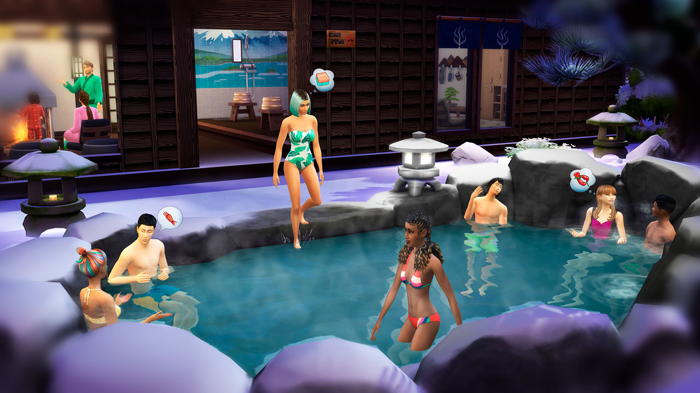
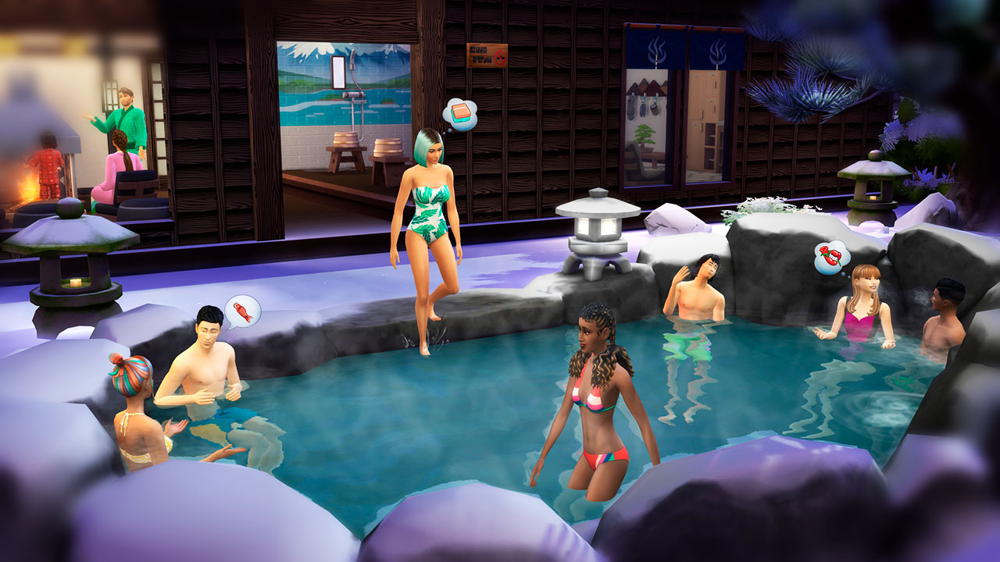
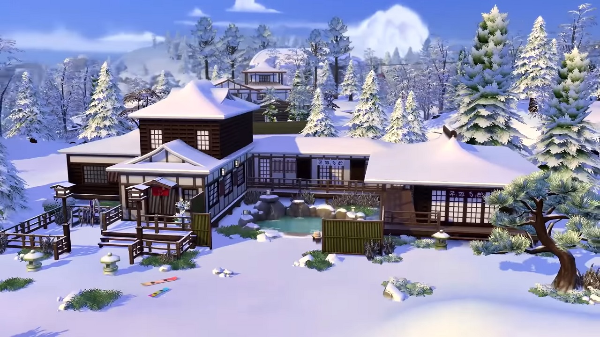

В дополнении The Sims 4 Снежные просторы нас ждет новый мир – Гора Комореби. Название переводится с японского примерно как “солнечный свет, проникающий сквозь кроны деревьев”. Как вы уже поняли, для его создания разработчики черпали вдохновение в японской культуре, так что все пейзажи, декорации и постройки будут выполнены именно в этом стиле.
